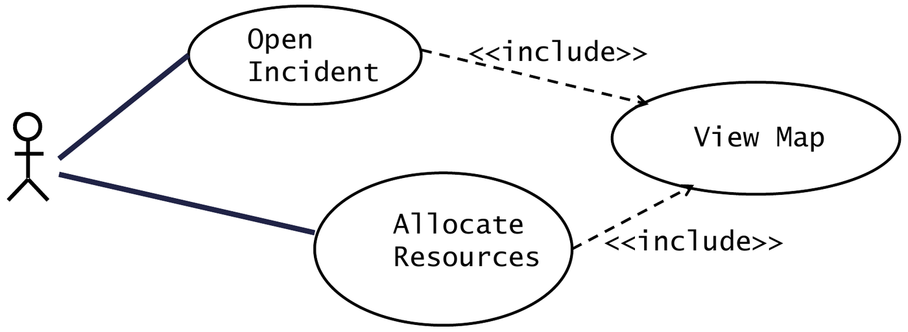
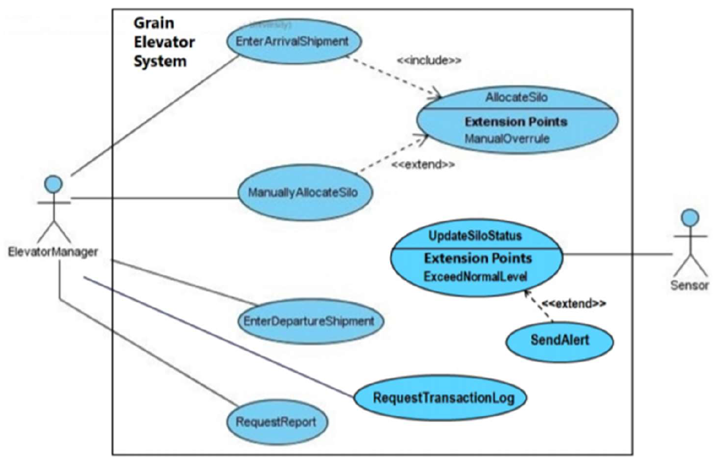

Functional requirements specify what capabilities a software system must provide. The Use Case Model translates those requirements into an operational, user-centric perspective by defining how external users interact with the system to achieve discrete business goals.
A complete Use Case Model consists of two complementary artifacts:
- The Use Case Diagram: A graphical UML blueprint defining the system boundary, external actors, operational use cases, and inter-use-case relationships.
- The Use Case Specification (Description): Detailed textual tabular specifications tracing the primary step-by-step success flow, preconditions, postconditions, and exception branches for each individual use case.
1. Core Diagram Elements and Boundary Invariants

| Element | Visual Notation | Semantic Definition | Invariants & Rules |
|---|---|---|---|
| System Boundary | Bounding rectangle with system title at the top. | Defines the exact operational perimeter of the software under development. | Use cases reside strictly inside; actors reside strictly outside. |
| Actor | Stick figure (or <<actor>> box). |
An idealized role played by an external entity interacting directly with the system. | Can be a Human User, an External Hardware Device/Sensor, or an External Software API/Service. The system under design is NEVER an actor! |
| Use Case | Horizontal ellipse. | A discrete, observable sequence of interactions yielding a measurable result of value for an actor. | Named using an active Verb + Specific Noun phrase
(e.g. Log Shipment,
Compute Silo Allocation). |
| Communication Association | Solid undirected line. | Indicates bidirectional interaction between an actor and a use case. | No arrowheads; plain line indicating information exchange. |
[!WARNING] The System Is Never an Actor: An actor must be entirely external to the system boundary. Treating internal modules, databases, or the system itself as an actor is a severe modeling error penalized heavily in examinations.
2.
Inter-Use-Case Relationships: <<include>>
vs. <<extend>>
To avoid redundant modeling and manage complexity, UML defines two distinct dependency relationships between use cases:

| Architectural Dimension | <<include>> Relationship |
<<extend>> Relationship |
|---|---|---|
| Execution Guarantee | Mandatory & Unconditional: The base use case always executes the included use case. | Optional & Conditional: The extending use case executes only if an explicit condition holds. |
| Completeness of Base Use Case | The base use case is incomplete on its own; it explicitly depends on the included behavior to satisfy its goal. | The base use case is fully complete and meaningful on its own; it remains valid even if the extension never runs. |
| Directed Arrowhead Direction | Directed dashed arrow pointing from Base to Included: | Directed dashed arrow pointing from Extending to Base: |
| Primary Architectural Purposes | 1. Functional Decomposition: Splitting a lengthy,
unwieldy use case into modular sub-routines. 2. Reuse: Factoring out shared behavior common across multiple base use cases (e.g. Authenticate User). |
1. Optional Features: Supplementary behavior
invoked only upon user request. 2. Exception Handling: Rare error workflows (e.g. handling hardware sensor failures or network disconnects). |
| Required Annotations | None (invocation point is implied within the base description). | Requires an explicit Extension Point in the base use case and a Guard Condition enclosed in notes. |
Linguistic Clue Words for Relationship Selection
- Use
<<include>>when requirements state: “always”, “must first”, “prior to proceeding”, “for every transaction”, “common step”. - Use
<<extend>>when requirements state: “optionally”, “if required”, “under error conditions”, “when requested by supervisor”, “only if balance exceeds limit”.
3. Standard Use Case Description (Specification)
While the diagram provides a structural overview, the Use Case Specification documents the dynamic contract between user and system:
| Field Name | Description | Example Standard Formulation |
|---|---|---|
| Use Case ID / Name | Unique identifier and active verb-noun name. | UC-02: Log Incoming Grain Shipment |
| Participating Actors | External roles involved; identify the initiator. | Silo Operator (Initiating), Weight Bridge Sensor (External Device) |
| Preconditions | Conditions that must be strictly true before the use case can start. | The Silo Operator is authenticated and the weighbridge sensor is calibrated. |
| Postconditions | Guarantees that the system must satisfy upon successful completion. | A new GrainArrivalShipment record is created, and gross weight is recorded. |
| Flow of Events (Primary Scenario) | Numbered, step-by-step trace of the ideal interaction path from initiation to goal satisfaction. | 1. Operator enters shipment tracking ID.2. System queries manifest database.3. System reads gross weight from weighbridge.4. System confirms record creation. |
| Alternative Flows (AF) | Variations of the normal path that branch and successfully merge back into the main flow. | AF-3a: Weighbridge offline: Operator manually inputs scale reading from paper slip; returns to Step 4. |
| Exceptions (EX) | Error conditions that cause the use case to abort without achieving the primary goal. | EX-2a: Manifest ID not found: System displays error alert and terminates use case. |
4. Official Tutorial Problems
Tutorial 2 Q1: Grain Elevator System complete use case model, specifications, and data dictionary
Question: Consider the operational workflow of the Grain Elevator System (GES):
- Operators receive incoming grain trucks, record initial weights via weight bridge sensors, inspect grain quality (moisture and temperature), and allocate grain to target storage silos.
- The system automates silo allocation based on grain moisture and available capacity. If automated allocation cannot find a matching silo, a manual supervisor override is triggered.
- Departure shipments involve loading grain onto outbound rail cars, printing manifests, and updating silo inventories.
(a) Draw a complete Use Case Diagram for the GES using
<<include>> and
<<extend>> relationships appropriately.
(b) Write the formal Use Case Description for the primary shipment
arrival workflow. (c) Define data dictionary entries for the
primary domain terms.
Solution:
Part (a): Grain Elevator System Use Case Diagram

Diagram Rationale:
- Actors:
Silo Operator(human user),Elevator Supervisor(human user),Weighbridge Sensor(hardware device), andCorporate ERP System(external software system). - Core Use Cases:
Log Grain Arrival,Allocate Storage Silo,Log Grain Departure,Generate Inventory Report. - Relationships:
Log Grain ArrivalRecord Weighbridge Weight(every arrival unconditionally requires weighing).Allocate Storage SiloRead Atmospheric Sensors(moisture and temperature checks are mandatory before storage).Manual Silo AllocationAllocate Storage Silowith extension point[On Automated Allocation Failure](optional branch executed only when automated matching fails).
Part (b): Formal Use Case Description
Use Case ID: UC-01
Use Case Name:
Log Grain Arrival and Allocate Silo
Participating Actors:
Silo Operator (Initiating),
Weighbridge Sensor, Atmospheric Sensors
Preconditions: The truck is positioned on the
weighbridge scale; GES is online.
Postconditions: Grain arrival is logged; truck gross
weight is stored; target silo is allocated; gate routing barrier is
raised.
Primary Flow of Events (Main Success Scenario):
- Truck arrives on the inbound weighbridge platform.
- Silo Operator enters the supplier permit ID into the GES console.
- System reads gross truck weight from the
Weighbridge Sensor(<<include>> Record Weighbridge Weight). - System prompts operator for sampling moisture content and grain grade.
- Operator inputs moisture percentage and grain inspection grade.
- System executes the automated allocation algorithm
(
<<include>> Allocate Storage Silo), sampling current humidity/temperature fromAtmospheric Sensors. - System identifies a compatible Silo with sufficient capacity and displays the target silo ID to the operator.
- Operator confirms allocation; system logs the
GrainArrivalShipmentand prints the driver routing slip.
Alternative Flows:
- AF-6a (Manual Override): Extending use case
Manual Silo Allocationfires at Extension Point[On Automated Allocation Failure]:- System notifies operator that no automated silo meets moisture/capacity criteria.
- Supervisor enters authorization credentials and manually selects an alternate staging silo.
- System records the supervisor ID and manual override justification; returns to Step 8.
Exceptions:
- EX-2a (Invalid Permit): System detects expired or unregistered supplier permit ID. System rejects arrival, displays error message, and terminates use case without opening weighbridge gate.
Part (c): Data Dictionary
GrainArrivalShipment: A domain record created upon entry, containingpermitID(String),supplierName(String),grainType(Enumeration: Wheat, Barley, Corn),grossWeight(kg),moisturePercentage(Float),allocatedSiloID(Integer), andarrivalTime(Timestamp).Silo: Physical storage structure characterized bysiloID(Integer),maxCapacity(Metric Tons),currentVolume(Metric Tons),grainTypeStored(Enumeration),ambientHumidity(Percentage), andambientTemperature(Degrees Celsius).